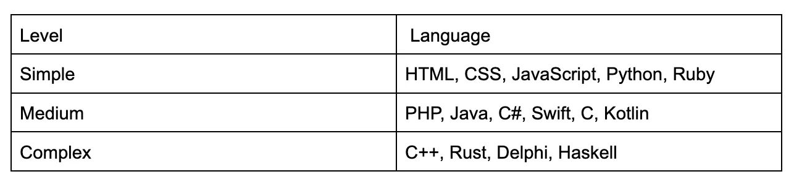

🔔 Introduction
👩💻 Programming is a journey filled with challenges and opportunities for growth. I started my journey in 2010 in the small city of Zolotonosha and have continued to grow in my profession ever since. I remember the nights spent writing code, living off nothing but microwave pizza. The experience I’ve gained allows me to confidently discuss the steps and approaches that I will outline in this article.
Throughout my development career, I have worked with various programming languages, such as Delphi, JavaScript, PHP, and Go, and with different domains including Cassino, CMS, Billing, Gambling, and Marketplace.
In this article, I want to share my experience, which may be useful for beginners who want to enter IT but don’t know where to start. I hope my advice will help you adapt more quickly to the world of programming and avoid some of the mistakes I encountered along my journey.
📚 Education
Having an education in IT does not guarantee that you will become a programmer. I know what I say, I do it based on the experience of my university group — only 20% of graduates went on to work in IT. Therefore, if you decide to enroll in an IT specialty, it will certainly make your path easier; you will have five years to go through 5 stages of life acceptance ;)
If you don’t have an IT education, that’s fine — we have IT courses for you. They promise that you will become a programmer in 3–6 months. However, having worked as a teacher at one of the IT schools, I can confidently say that the percentage of people who become programmers after courses is even lower — only about 5% (based on personal calculations).
Why does this happen? The time for learning is limited, there’s little time for homework, you have already a primary job, and most students simply don’t manage to go through all 5 stages of acceptance. 50% remain in the denial stage, realizing that programming is not for them; 20% get stuck in anger; only 10% reach the bargaining stage; another 10% are in depression, and only 10% make it to the acceptance stage.
✨ Types of development
The choice of development direction often depends on your interests and goals, whether it’s creating web applications, mobile apps, robotics, or games. Let’s look at what we have.
- Web Development: Frontend/Backend, Fullstack Development
- Mobile Development: Programming applications for phones.
- Game Development: Programming games.
- Application Development: Programming applications for OS.
- Embedded Development: Programming microcontrollers and embedded systems.
- Robotics Development: humanoid robotics development
👅 Choosing a language
Depending on the direction that interests you, some languages are most suitable for solving specific tasks and developing applications. Let’s look at which programming languages are best for different types of development to help you make an informed choice.
☁️ Web development
Frontend development:- JavaScript: The main language used to create interactive interfaces.
- HTML and CSS: For markup and styling web pages.
- PHP: Popular for web applications and working with CMS.
- Python: Often used with frameworks like Django and Flask.
- Node.js: JavaScript on the server side.
- Java: For large and reliable applications.
- Ruby: Used with Ruby on Rails.
📱 Mobile development
iOS development:- Swift: The main language for developing applications on iOS.
- Objective-C: An older language still used in some projects.
- Kotlin: The preferred language for Android applications.
- Java: Also widely used in Android development.
- JavaScript (with React Native), Dart (with Flutter), and C# (with Xamarin).
🎮 Game development
- C#: Used with Unity.
- C++: Widely applied in game development, especially with Unreal Engine.
💻 Application development
- C#: For developing applications on Windows (with .NET).
- Java: For cross-platform applications and Android.
- Python: For creating desktop applications and scripts.
- Delphi: used for developing applications across multiple platforms, including Windows, macOS, iOS, and Android, making it suitable not only for desktop applications but also for mobile and web applications.
📼 Embedded development
- C and C++: Fundamental languages for developing embedded systems.
- Python: Used for prototyping and developing simple solutions.
⚙️ Robotic development
- Python, C++, Java, MATLAB, C#
It’s also important to consider the level of complexity and the entry barrier of a language. Some languages are easier for beginners, while others require a deeper understanding of programming concepts and development. Working in game development might sound tempting, but you need to understand that mastering C++ will be more challenging than PHP.
Here’s a table of programming languages sorted from simple to more complex:
👦 Junior: The Beginning of the Journey
For example, let’s take a person who is interested in web development but hasn’t yet decided on a specialization (back or front). They decide to become a full-stack developer to master two areas simultaneously and improve their job market prospects. Let’s outline the steps needed to become a successful developer.
📚 Education
Choosing the right IT school
Self-education is one of the most effective ways to learn programming, especially if you don’t have the opportunity or desire to take formal courses. Here are several key tips to master the profession:
- Reputation of the school and student reviews.
- Instructors with experience in IT.
- Comprehensive training program.
- The higher percentage of practical training.
- Mentoring and feedback from instructors.
- Employment or at least internships at IT companies.
- Cost and duration of training.
2. Self-Education
Self-education is one of the most effective ways to learn programming, especially if you don’t have the opportunity or desire to take formal courses. Here are several key tips to master the profession:
- Clear planning and goal-setting
- Selecting educational materials (YouTube, ChatGPT, Books)
- Following respected figures in your field (Robert C. Martin, Martin Fowler, etc.)
- Studying other developers’ code (GitHub)
- Reading documentation and technical blogs (Stack Overflow, Medium, Reddit, Habr)
- Practice, practice, practice
🌐 Community and networking
- Participate in Communities: Join online communities (Telegram, Slack, Discord) and engage in discussions.
- Local Meetups: If possible, participate in local IT events or hackathons.
🔨 Tools
For a Junior PHP Developer, it’s crucial to master key tools that will help effectively write, test, and deploy applications. Here’s a list of essential tools to study:
- Project Management Systems (JIRA)
- Error Monitoring and Logging (Sentry, Graylog)
- Performance Tracking Tools (New Relic, Kibana, Grafana, Blackfire)
- Version Control Systems (Git)
- Containerization (Docker, Vagrant)
- Development Environments (IDE)
- Dependency Managers (Composer, NPM/Yarn)
- CI/CD Systems (GitLab CI, Jenkins, Travis CI)
- API Tools (Postman/Insomnia, IDE tools)
- Database Management Tools (phpMyAdmin)
This list will provide you with a solid foundation to become a successful Junior PHP Developer. Start with the basics, such as PHP, Git, and databases, and gradually delve into more complex tools.
🦾 Hard skills
Hard skills are the technical knowledge and abilities that a Junior PHP Developer needs to work effectively in a team and accomplish assigned tasks. These skills encompass a wide range of technologies and tools, from basic programming in PHP to knowledge of frameworks, databases, and development tools. Here’s a list of essential skills to master:
- Web Servers (Apache/Nginx)
- Understanding Basic Frontend Technologies (CSS, HTML, JS at a basic level)
- Fundamentals of PHP (Knowledge of syntax and basic constructs of the language)
- Basics of Popular Frameworks (Laravel, Symfony, or CodeIgniter)
- Working with Databases: MySQL/PostgreSQL
- Testing: PHPUnit
- Debugging: Xdebug
- Basics of Web Technologies (RESTful API)
- Security Basics (SQL Injection, XSS, CSRF)
- Understanding Agile Principles (Scrum, Kanban)
👬 Soft skills
Soft skills are interpersonal and personal effectiveness skills that play a crucial role in a successful developer’s career. Unlike hard skills, which focus on technical knowledge, soft skills help a developer work effectively in a team, communicate with colleagues and clients, and adapt to changing conditions. Here’s a list of essential soft skills to develop:
- Communication Skills
- Teamwork
- Willingness to Learn and Adapt
- Ability to Handle Uncertainty
- Effective Task Planning and Estimation
- Approaching Tasks from Different Angles
- Emotional Intelligence and Management
- Persistence and Motivation
- Organizational Skills
- Conflict Resolution Skills
- Flexibility and Adaptability
💼 Practice
Practice is a key element in learning and becoming a developer. Although theoretical knowledge is essential, it cannot fully prepare you for the real challenges you will face in your work. Here are some ways to enhance your practice:
- Participate in Open Source Projects (GitHub)
- Join Hackathons (Devpost, HackerEarth, Hackathon)
- Solve Problems on Various Platforms (HackerRank, Codewars, LeetCode)
- Create a Website (Blog) for Yourself and Friends
- Take Freelance Jobs (Upwork, Freelancer, Fiverr, Guru)
👔 Creating a portfolio
A portfolio should showcase your skills, experience, and approach to development, helping you stand out among other candidates. Here are important things to consider when creating your portfolio:
- Contact Information and Photo: Include up-to-date contact details and a professional photo.
- Completed Projects: Include projects completed in IT school or at hackathons.
- Personal Website or Blog: Create a platform to showcase your skills and thoughts.
- GitHub Profile: Ensure your code is well-structured and documented.
- Internships: Mention your role and responsibilities.
- Courses Taken: List courses relevant to your professional development.
- Certifications: Add information about certificates confirming your skills.
- References or Recommendations: Having a positive reference will be a plus.
- Keep your Resume and Portfolio updated.
🎯 Job search
Searching for a job can be a challenging process, especially for a Junior PHP Developer, but don’t be discouraged. Be prepared for rejections and be ready to go through 100+ interviews. Some various strategies and platforms can assist you:
- Job Search Websites (LinkedIn, Indeed, Glassdoor).
- Freelance Platforms (Upwork, Freelancer, Fiverr).
- Conferences and Meetups.
- Hackathons.
- Directly Contacting Companies.
- Internships and Practices.
- Finding a Mentor.
- Social Media.
- Professional Communities and Forums.
- Recruitment Agencies.
☎️ Preparing for interviews
Proper preparation will help you confidently present your skills and experience and demonstrate that you are a good fit for the position. Here are several tips on how to prepare for an interview:
- Study the Company: Learn about the company’s mission, values, and culture. Review recent news and projects.
- Understand Requirements and Responsibilities: Carefully read the job description and key responsibilities. Pay attention to necessary skills and qualifications.
- Prepare Examples from Your Experience: Think of specific examples from your past experiences that showcase your achievements and skills.
- Review Common Questions: Prepare for commonly asked interview questions, such as “Tell me about yourself” or “How do you handle challenges?”
- Refresh Your Technical Knowledge: Brush up on technologies and methodologies that may be relevant to the interview. Familiarize yourself with new trends and developments in your field.
- Prepare a Brief Introduction: Create a clear and concise introduction that highlights key points of your experience and achievements.
- Prepare Questions to Ask: Formulate questions about the team, projects, and opportunities for growth in the company.
- Practice Interviews (with Friends or in a Group): Conduct mock interviews with friends or colleagues to feel more confident.
- Pay Attention to Non-Verbal Communication: Practice confident posture, eye contact, and open gestures.
- Prepare All Necessary Documents: Ensure you have copies of your resume, portfolio, and other important documents.
- Know the Interview Format: Check if it will be a technical interview, HR interview, or panel interview to prepare accordingly.
💰 Receiving an offer
Congratulations! You have successfully passed all stages of the interview process and made a good impression on the employer. What to do next?
- Research the Company: Investigate the company’s reputation (employee reviews, news, and successes).
- Review the Offer Carefully: Examine the terms of employment, including salary, bonuses, and benefits.
- Compare with Other Offers: Analyze other offers, if any, and evaluate the pros and cons of each.
- Prepare for Your New Role: Research the technologies, tools, and methodologies used in the company. Begin studying available documentation and general role requirements.
- Plan the Transition Period: Determine how you will leave your current job, notify your manager and team, and prepare your projects for handover.
- Discuss Start Date and Initial Tasks: Confirm the start date and discuss what tasks will need to be addressed in the first few days.
- Discuss Career Growth Opportunities: Inquire about the available opportunities for development and advancement in the company.
- Review Contract Terms: Ensure all conditions regarding termination, confidentiality, and non-compete clauses are clear and acceptable.
Every step on the path to becoming a developer requires time and effort. From choosing educational materials and self-education to participating in hackathons and preparing for interviews, all these stages have their duration and significance. It’s important to understand that the learning and job search process is not a race; it’s a journey that requires careful planning and a methodical approach to task execution.
The time it takes for each step depends on your circumstances, level of motivation, and available resources. For some, this journey may take a year, while for others, it may take several years. But the result is undoubtedly worth all the effort!
👨 Middle/Middle+: Development
After 2–3 years, you’ve gained your first experience in programming as a Junior developer. However, to move up to the next level and become a Middle developer, it’s essential not only to strengthen your knowledge but also to develop skills that will make you a valuable team member.
Let’s discuss the Middle+ position first.
There is no such gradation. Unfortunately, in today’s reality, some companies prefer to under-evaluate experienced specialists by classifying them as Middle+ instead of hiring Senior developers. This leads to a distorted understanding of career growth and can diminish the motivation of professionals. Therefore, if you truly feel the strength within yourself to advance to the next level and become a Senior, you need to deepen your technical skills sufficiently.
Currently, there are far more courses for Junior developers than for Middle developers. Your goal should focus on gaining practical experience. A wealth of information and resources is available in the form of books, articles, and video tutorials, which can help deepen your knowledge in specific areas. Additionally, some companies offer individual or specialized training for teams. Here’s a list of how you can independently develop your skills:
- Learn a new programming language and understand its nuances.
- Master a new framework and integrate it into your projects.
- Continuously learn new technologies and approaches in development.
- Write tests (Unit, Functional, Integration) and learn to test your code at various levels.
- Continue to develop your GitHub account by adding new projects and improving existing ones.
- Participate in open-source projects for real-world coding experience and community engagement.
- Enhance your communication skills at work by engaging in discussions and providing feedback.
- Try mentoring Junior developers to share your experience.
- Obtain additional certifications to validate your skills.
- Attend conferences and meetups to network and gain fresh insights.
- Study architectural principles and design patterns, applying them in your projects.
- Work on your soft skills (time management, emotional intelligence, teamwork).
- Gradually learn DevOps practices such as automation, CI/CD, and containerization.
- Experiment with being a speaker at conferences by delivering talks.
- Read technical literature, and blogs, and participate in online courses to broaden your knowledge.
By following these steps and continuously developing your skills, you can successfully transition to the level of a Middle developer.
👴 Senior: Expertise
It has been 5+ years since we entered the IT field. However, the transition from a Middle developer to a Senior developer can be more challenging than moving from Junior to Middle. The primary reason is that at the Senior level, specialists are expected to possess not only deep technological knowledge but also a wide range of other skills and qualities.
Thus, the shift from a Middle to a Senior position is not just a step up the career ladder; it represents significant growth in both professional and personal skills. This journey requires time, patience, and continuous self-development, making it a true challenge for many developers.
Another crucial aspect is how Senior roles are perceived within the company. If colleagues and management are accustomed to seeing you as a Middle developer, a stereotype may arise that complicates your transition. In such cases, changing jobs might be beneficial, as it can be easier to start with a clean slate and establish yourself as a Senior developer in a new company.
It’s also worth noting that in some organizations, career advancement at the Senior level may be limited. A lack of vacancies, high competition, and uncertainty regarding expectations for Senior developers can add to the difficulties in this process.
Who is a Senior developer?
They are undoubtedly someone who embodies the following traits:
- Soft skills:
- Continuous self-learning and a commitment to professional development.
- Adaptability to change and flexible thinking.
- Critical thinking and analytical approach.
- Independence and self-discipline.
- Ability to create and maintain quality documentation.
- Effective teamwork.
- Problem-solving and finding optimal solutions.
- Mentoring, leadership, and team management.
- Communication skills and the ability to share knowledge.
- Emotional intelligence and conflict management.
- Ability to take responsibility for decisions and their consequences.
- Hard skills:
- Deep understanding of programming languages and mastery of their intricacies.
- Experience with popular frameworks (e.g., Symfony, Laravel).
- Skills with testing your code: Write Unit, Functional, and Integration tests.
- Knowledge of SQL and experience with relational databases (e.g., MySQL, PostgreSQL).
- Understanding of LLM (Large Language Models).
- Experience with a search engine (Elasticsearch).
- Experience with NoSQL databases (e.g., MongoDB, Redis).
- Ability to design and implement RESTful and GraphQL APIs.
- Understanding of architecture and fundamental design patterns.
- Philosophy of Domain-Driven Design (DDD) and its application.
- Understanding of “clean code” and “clean architecture” principles.
- Mastery of best coding practices (SOLID, DRY, KISS, etc.).
- Knowledge of essential application security principles (OWASP, encryption, authentication).
- Ability to analyze and optimize application performance.
- Contribution to open-source and participation in professional communities.
- Understanding of DevOps practices (CI/CD, containerization, orchestration).
- Experience with cloud platforms (AWS, Google Cloud, Azure).
By following these steps and continually developing your skills, you can successfully transition to the level of a Senior developer.
👀 Developer level gradation
Finally, want to leave some words about level gradation. The distinctions between Junior, Middle, and Senior levels in software development generally reflect the developer’s experience, skill set, and the responsibilities expected in their roles. Here’s the translation: It’s important to remember that the level of specialization is very subjective and depends on the scale and culture of the company you work for. For example, if you hold a Senior position at Company X, it doesn’t mean that you will be perceived the same way at Company Y, where different standards and requirements may apply. This is normal, and it’s essential to understand that each organization has its own criteria for assessing skills and experience.
🏁 Conclusion
On the path to mastery as a developer, it’s important to remember that success is not just a collection of technical skills but also a constant drive for growth, the ability to work in a team and adapt to changes. Strive for learning, try new approaches, and don’t be afraid to step outside your comfort zone.
Remember that mastery is a process, not an endpoint. Every new project, each mistake, and every victory is a step toward your perfection. Believe in yourself, and your journey to mastery will lead you to success!
That’s it 🎉, thanks for reading!